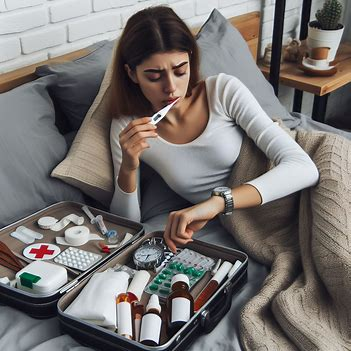

First Aid
Fever
- Drink plenty of fluids to stay hydrated.
- Get plenty of rest to help your body fight off the infection.
- Take over-the-counter medications such as acetaminophen or ibuprofen to reduce fever and relieve pain.
- Take a lukewarm bath or use a cool compress to help reduce fever.
- Wear lightweight clothing and avoid excessive layers to help regulate your body temperature.
- Avoid alcohol and caffeine, which can cause dehydration.
